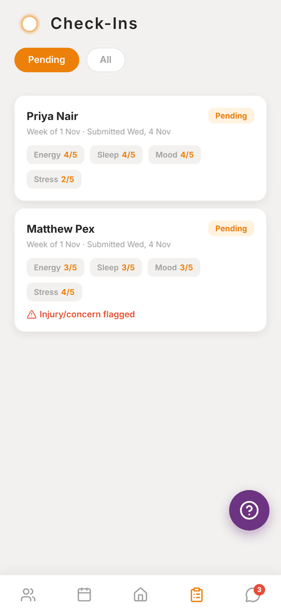
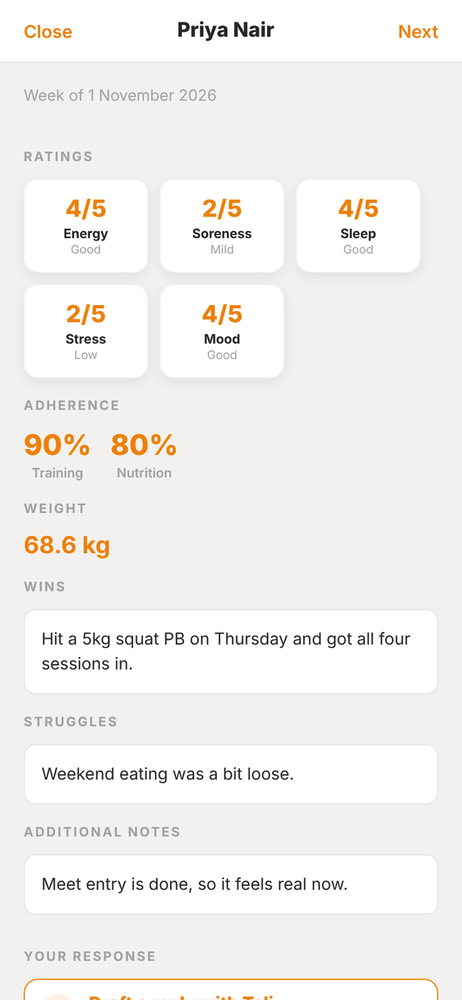
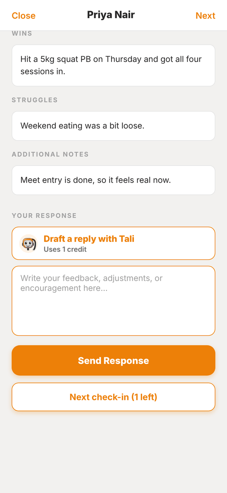
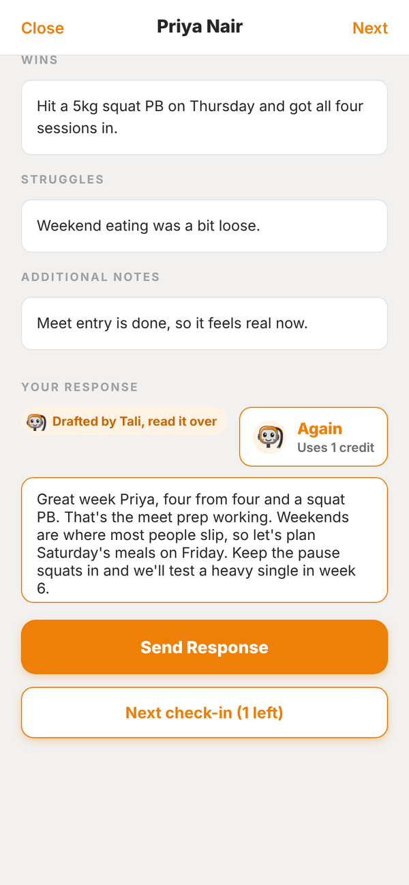

Totality for trainers
Weekly check-ins
How client check-ins work, how to review one, reply (with or without Tali) and move through the queue.
Each week your clients fill in a check-in: how they slept, their energy, soreness, stress and mood, how well they stuck to training and nutrition, their weight, wins, struggles and anything else. You read it and reply. It's the backbone of online coaching.
How check-ins reach you#
There's nothing to set up. Every client has a weekly check-in in their app.
- Check-ins are weekly, keyed to the week ending Sunday. A client can send one per week.
- Every Sunday at 8am (Sydney time) clients get a reminder by push and email, unless they've turned check-in reminders off.
- A client can tap Skip This Week instead. Skipped weeks don't count as missed.
- On Mondays, a client who didn't check in and didn't skip shows "Check-in overdue (missed Sunday)".
- You get a push when a check-in arrives (if Client submitted a check-in is on in Settings).
The Check-Ins tab#
Pending shows check-ins waiting for your reply. All shows every recent one. Each card shows the client, the week, when it was sent, their Energy, Sleep, Mood and Stress scores, and Injury/concern flagged in red if they mentioned one.


Review and reply#
- Tap a check-in to open it.
- Read Ratings (each out of 5 with a word like Good or Mild), Adherence for training and nutrition, Weight, Wins, Struggles, Injuries / concerns and Additional notes.
- Under Your response, write your feedback.
- Tap Send Response. You see "Response sent to client." and the client gets a notification.
- Tap Next check-in (N left) to go straight to the next one, or Close. All caught up means you're done.
To change a reply later, open the check-in from All, edit it and tap Update Response. The client is told you updated your feedback.
Draft a reply with Tali#
Paid Trial Under Your response, tap Draft a reply with Tali. She reads the whole check-in and writes a reply for you in a few seconds. It uses 1 credit.
- The draft is marked "Drafted by Tali, read it over". Edit anything.
- Again writes a fresh draft (another credit). It replaces what's in the box.
- Nothing is sent until you tap Send Response.


Check-ins elsewhere in the app#
- Home shows Check-ins to review in Today, a count in Your Overview, and Recent Check-Ins.
- Waiting on you lists every check-in you haven't replied to.
- Low scores or an injury in a check-in flag the client in Needs Attention on Home.
Questions#
Can I change the check-in questions?
No. Every client gets the same check-in.
Can I change the check-in day?
No. Check-ins run weekly to Sunday, with the reminder on Sunday morning.
Can clients see their past check-ins and my replies?
Yes. Clients have a check-in history in their app with your responses.
I don't see a client's check-in.
Archived clients drop out of the Check-ins tab. Unarchive them to see their check-ins again.